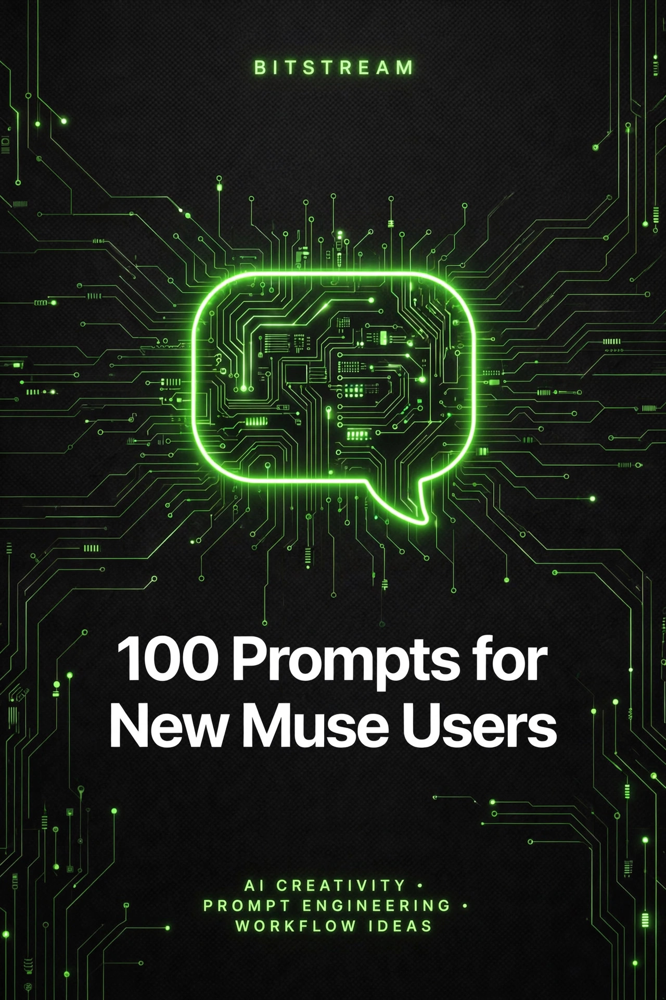

BITSTREAM · ZERO FILLER. ALL VALUE.
100 Prompts
for New Muse Users
100 copy-paste prompts to make your first week with Muse count.
Ask, fill in the blanks, done.
ESSENTIAL PACK · $7.99
How to use this pack (60 seconds)
- Open Muse — just start a chat like you would text a friend. There is no wrong first message.
- Copy any prompt and replace the [BRACKETED] parts with your details.
- Be specific. Context in, quality out. "Help me write an email" gets a generic email. "Help me write a polite email to my landlord asking to fix a leaky faucet, I've been a tenant for 2 years" gets one you can actually send.
- Talk back. Muse's first answer is a starting point, not a final answer. Reply with "make it shorter," "give me 3 options," or "explain it like I'm 12" until it fits.
- You're the boss. Muse is fast and helpful, not perfect. Double-check anything important — money, health, legal stuff — before you act on it.
Rule 1 — Details in, quality out. Who, what, when, how much — the more of your real situation you describe, the more useful the answer. "Plan a birthday party" is vague. "Plan a 10-year-old's birthday party for 12 kids, under $150, at my house on a Saturday" is a plan.
Rule 2 — Never paste passwords, account numbers, or other private info into chat. Describe the situation ("my $59 subscription renewed and I want to cancel it") instead of handing over login details.
Rule 3 — Check important facts before acting on them. AI can sound confident about things it got wrong. For anything involving money, health, or deadlines, verify with an official source before you move.
1 · Getting Started
Your first 5 minutes with Muse — try these and you'll get how it works fast.
PROMPT 01
The perfect first message
I'm new here. Introduce yourself in one short paragraph, then list 5 specific things you can help me with that I might not expect.
PROMPT 02
Learn how to ask well
Teach me how to ask you good questions. Show me one vague question and its better version, then one good question and an even better version, using [planning a weekend trip] as the example topic.
PROMPT 03
Test drive: a quick answer
Ask me to pick one everyday topic — [cooking, money, fitness, or organizing my home] — then answer my first question about it in under 100 words so I can see how fast this is.
PROMPT 04
What can you actually do?
Give me 10 concrete things I can ask you to do for me this week as [a busy parent of two]. Real tasks with examples, not vague categories.
PROMPT 05
Set the tone you want
From now on, when I ask you things, explain them like you're talking to [a smart friend who knows nothing about the topic]. Keep answers [short and practical] unless I ask for more detail. Confirm you understood.
PROMPT 06
Your first real task
I want to try you on something real. Here's my situation: [describe one thing on your mind this week]. What would you suggest I ask you about it? Give me 3 ready-to-copy questions.
PROMPT 07
Make it yours
Here's what I want you to remember about me: [list 3-5 facts — your job, your hobbies, your city, anything useful]. Summarize them back to me so I can check you got them right.
PROMPT 08
Practice the follow-up
Give me a quick example of how follow-up questions work. Start by answering: "What's a good [cheap weeknight dinner]?" — then show me 3 follow-ups I could send to make the answer better fit me.
PROMPT 09
Ask it like a human
I feel awkward talking to an AI. Give me 5 natural, casual ways to start a conversation with you about [getting my finances in order] — the way I'd actually type them.
PROMPT 10
The honesty check
Tell me honestly: what are 3 things you're NOT good at, and what should I do instead for those? I want to know your limits up front.
2 · Everyday Answers & Research
Fast, plain-English answers to the questions that pop up all day.
PROMPT 11
Explain it like I'm five
Explain [how credit scores work] like I'm five years old. Use a simple analogy and keep it under 150 words.
PROMPT 12
Compare two options
I'm deciding between [buying a used car] and [leasing a new one]. I drive about [12,000 miles a year] and my budget is [$350 a month]. Compare them in a simple table: cost, flexibility, and who each option suits best.
PROMPT 13
Quick fact check
I heard that [drinking coffee before a workout burns more fat]. Is that true? Give me the short answer, then one paragraph on what the evidence actually says.
PROMPT 14
Decode the jargon
My [landlord] sent me a document full of legal terms about [my security deposit]. Translate it into plain English, paragraph by paragraph, and flag anything that sounds unusual. Here's the text: [paste it].
PROMPT 15
Pros and cons, fast
Give me the real pros and cons of [switching to a cheaper phone plan]. No sales pitch — just the honest trade-offs in plain language, 5 each.
PROMPT 16
What does this mean for me?
I keep hearing about [the new tax changes] in the news. I make about [$55,000 a year] and [rent my apartment]. In plain English, what actually changes for someone like me?
PROMPT 17
Teach me the basics
I know nothing about [homeowner's insurance] and I need to buy some soon. Give me a beginner's crash course: what it covers, what affects the price, and 5 questions to ask before I sign anything.
PROMPT 18
Settle a debate
My friend and I disagree: [is it cheaper to cook at home or buy meal kits?] Settle it with real math for [a family of 4, 5 dinners a week]. Show your work so I can show them.
PROMPT 19
Read this for me
Summarize this [news article] in 5 bullet points I can read in 30 seconds. Then tell me the one thing in it that actually affects my daily life. Here's the article: [paste it].
PROMPT 20
Is this a scam?
I got a message saying [describe the message]. Does this sound like a scam? List the red flags, and tell me exactly what to do (and not do) next.
3 · Writing Help
Emails, texts, and notes that sound like you on your best day.
PROMPT 21
The polite-but-firm email
Write a polite email to [my landlord] about [a leaky faucet that's been dripping for 3 weeks]. I've been a tenant for [2 years] and always pay on time. Firm enough to get action, friendly enough to keep the relationship good. Under 150 words.
PROMPT 22
The difficult text message
Help me text [my friend] to say I can't make it to [their birthday dinner] because [I'm broke this month]. I want to be honest without oversharing, and suggest [coffee next week] instead. Give me 2 versions: casual and warm.
PROMPT 23
The apology that lands
I need to apologize to [my sister] for [missing her graduation party]. Write a sincere apology I can send as a text: own it, don't make excuses, and suggest how I'll make it up to her. Under 80 words.
PROMPT 24
The thank-you note
Write a thank-you note to [my neighbor] who [watched my dog while I was out of town]. Warm and genuine, mention [one specific thing] they did, under 100 words. Give me a card version and a text version.
PROMPT 25
The complaint that gets results
Write a complaint email to [an airline] about [a cancelled flight that cost me a hotel night]. State the facts, say what I want ([a refund for the hotel]), and keep it professional. Include my booking reference spot: [ABC123].
PROMPT 26
The social media caption
Write 5 Instagram caption options for [a photo of my finished home renovation — the kitchen]. Mix of funny, heartfelt, and simple. Keep each under 20 words and add relevant hashtags.
PROMPT 27
The work email, upgraded
Here's a rough work email I wrote: [paste it]. Rewrite it to sound [more professional but still friendly]. Keep my meaning exactly, fix the tone, and tell me what you changed and why.
PROMPT 28
The wedding toast
I'm giving a [2-minute] toast at my [best friend's] wedding. I've known them for [10 years] and my favorite memory is [our road trip after college]. Write a toast that's funny, a little emotional, and doesn't embarrass anyone.
PROMPT 29
The breakup of a subscription
Write me a short, firm script for calling [my gym] to cancel my membership. They always try to keep me. Give me exactly what to say when they offer [a discount / a free month / a freeze] and I still want to cancel.
PROMPT 30
The review that helps
Help me write a helpful online review for [a local plumber] who [fixed my sink the same day for a fair price]. Specific, honest, and useful to the next customer — 4-5 sentences.
4 · Planning & Organizing
Lists, plans, and timelines that take the chaos out of your week.
PROMPT 31
The weekly reset
Help me plan my week. I work [9-5, Monday to Friday], I want to fit in [3 workouts and one date night], and I need to [grocery shop and clean the apartment]. Build me a day-by-day plan with time blocks.
PROMPT 32
The packing list
I'm going on a [5-day] trip to [Chicago in October] for [a wedding plus sightseeing]. Make me a packing list: clothes by day, toiletries, and the 5 things people always forget.
PROMPT 33
The meal plan
Plan 5 weeknight dinners for [2 adults]. Constraints: [under $80 total, 30 minutes or less each, one vegetarian night]. Give me the menu, a single grocery list, and which nights to cook what.
PROMPT 34
The party plan
I'm throwing a [birthday party] for [15 people] at [my apartment] with a budget of [$200]. Give me: a shopping list, a food plan, a timeline for the day, and 3 cheap decorations that make it look great.
PROMPT 35
The moving checklist
I'm moving to [a new apartment across town] in [3 weeks]. Give me a week-by-week moving checklist: what to do now, what to pack when, who to notify, and moving-day essentials.
PROMPT 36
The to-do triage
Here's everything on my plate: [list it all]. Sort it into: do today, do this week, and can wait. For the "do today" items, put them in the order I should tackle them and tell me why.
PROMPT 37
The declutter plan
I want to declutter my [bedroom and closet] this weekend. I have [4 hours on Saturday]. Give me a step-by-step plan: where to start, how to decide what stays, and what to do with the stuff that goes.
PROMPT 38
The holiday game plan
I'm hosting [Thanksgiving] for [8 people] for the first time. Give me a full plan: the menu, a shopping list with quantities, a 3-day prep timeline, and what I can ask guests to bring.
PROMPT 39
The project breakdown
I need to [redo my resume and apply to 10 jobs] but it feels overwhelming. Break it into small steps I can do in [30-minute] chunks, in order, with a checkbox list I can follow.
PROMPT 40
The morning routine
Design a [45-minute] morning routine for me. I need to [be out the door by 7:30], I want to include [exercise and a real breakfast], and I hate [waking up to an alarm and rushing]. Be realistic.
5 · Money & Budgeting Basics
Simple, judgment-free help with the money stuff nobody taught you.
PROMPT 41
The starter budget
I make [$3,200 a month after taxes]. My fixed costs are: rent [$1,200], car [$300], insurance [$150], phone [$60]. Build me a simple monthly budget with spending categories and tell me how much I can realistically save.
PROMPT 42
Where is my money going?
Here's what I spent last month: [paste your spending or list categories]. Categorize it, show me the biggest leaks, and suggest 3 specific cuts that won't make me miserable.
PROMPT 43
The debt payoff plan
I have [$4,000] in credit card debt at [22% APR] and I can put [$300 a month] toward it. Show me a payoff plan: how long it takes, total interest paid, and whether I should pay minimums on everything or attack one card first.
PROMPT 44
The emergency fund target
I want to build an emergency fund. My monthly must-pay bills total [$2,100]. How much should I aim for, and what's a realistic plan to get there saving [$200 a month]?
PROMPT 45
Compare the big purchase
I'm thinking of buying [a $1,200 laptop]. Help me decide: can I afford it right now? I have [$800] in savings and make [$3,000 a month]. Give me an honest yes/no with the math, plus 2 cheaper alternatives.
PROMPT 46
The bill tracker
Help me set up a simple bill-tracking system. My bills: [rent due the 1st, electric due the 12th, car insurance due the 20th, phone due the 25th]. Give me a one-page layout and a routine so I never miss one.
PROMPT 47
The savings challenge
I want to save [$1,000] in [3 months]. Design a weekly savings challenge for me with increasing amounts, starting small. Include what to do if I miss a week.
PROMPT 48
Salary reality check
I got offered [$52,000 a year] in [Charlotte, NC]. Is that livable for [one person renting a 1-bedroom]? Break down what take-home looks like monthly and what rent I can afford.
PROMPT 49
The subscription audit
Here are my subscriptions: [list them with prices]. Tell me which ones to keep, which to cut, and which to downgrade — and how much I'd save per year.
PROMPT 50
Explain investing simply
I have [$500] I don't need for a year and I've never invested. Explain my simplest options in plain English: what a [high-yield savings account] vs [an index fund] means, the real risks of each, and what you'd suggest I research first. This is educational, not advice — I'll decide myself.
6 · Learning New Things
Your patient personal tutor — study help, new skills, and hard topics made simple.
PROMPT 51
Break down the hard topic
I'm studying [photosynthesis] for [a biology test] and I don't get it. Explain it step by step, starting with what I probably already know, and use one everyday analogy. Then check my understanding with 3 questions.
PROMPT 52
Quiz me
Quiz me on [Spanish food vocabulary]. Ask me one question at a time, tell me if I'm right, and explain the ones I miss. Keep going for [10 questions], then give me my score.
PROMPT 53
Learn a skill from zero
I want to learn [basic guitar] from scratch. I have [a guitar and 20 minutes a day]. Give me a 4-week beginner plan: what to practice each week and how I'll know I'm ready to move on.
PROMPT 54
Explain my kid's homework
My [4th grader] has homework on [long division] and I forgot how it works. Teach ME first in plain steps, then give me 3 practice problems I can do with them tonight.
PROMPT 55
Make a study plan
I have a [history] exam in [2 weeks] covering [the Civil War]. I can study [45 minutes a day]. Build me a day-by-day study plan with what to cover each day and how to review.
PROMPT 56
Flashcards, instant
Make me 20 flashcards for [anatomy: the bones of the hand]. Format: term on one line, definition on the next, numbered. Keep each definition under 15 words.
PROMPT 57
Learn by example
I learn best by examples. Teach me [how to write a good thesis statement] by showing me 3 bad ones, why each is bad, and the fixed version of each.
PROMPT 58
The 5-minute refresher
I learned [conversational French] years ago and I'm rusty. Give me a 5-minute refresher I can do daily for a week: key phrases, one grammar point per day, and a mini-quiz at the end of each day.
PROMPT 59
Understand, don't memorize
I keep memorizing [the steps of the scientific method] and forgetting them. Help me actually understand each step with a real-life example, then test me in a way that proves I get it.
PROMPT 60
Prep for the certification
I'm studying for [my real estate license exam]. Give me a study strategy: the highest-yield topics to focus on, how to use practice tests effectively, and a 1-week cram plan for [2 hours a day].
7 · Work & Job Help
Resumes, interviews, and workday wins — your career co-pilot.
PROMPT 61
Resume from scratch
Help me write my resume. My background: [5 years in retail, now applying for office admin jobs]. Give me a clean format, strong bullet points from my experience, and what to leave out.
PROMPT 62
Fix my bullet points
Here are my resume bullet points: [paste them]. Rewrite each one to sound more impressive and specific — add numbers and results where possible. Keep the truth, lose the bland.
PROMPT 63
Cover letter that works
Write a cover letter for [a customer service rep position at a bank]. I'm coming from [3 years as a restaurant server]. Connect my people skills to the job, keep it to 3 short paragraphs.
PROMPT 64
Interview practice
Pretend you're interviewing me for [a warehouse supervisor job]. Ask me one common interview question at a time. After each of my answers, rate it 1-10 and tell me how to improve it.
PROMPT 65
The "tell me about yourself" answer
Help me craft a 60-second "tell me about yourself" answer for [a nursing assistant interview]. My background: [CNA for 2 years, love working with elderly patients]. Confident, warm, and concise.
PROMPT 66
Questions to ask THEM
I'm interviewing for [a marketing coordinator role] tomorrow. Give me 8 smart questions to ask the interviewer that show I'm serious — not the generic ones everyone asks.
PROMPT 67
The follow-up email
Write a thank-you email to send after my interview for [a teacher's aide position]. Reference [something specific we discussed about the classroom], keep it short, and send it [the same evening].
PROMPT 68
Ask for the raise
I've been at my job for [2 years] as [a line cook] and I want a raise. Help me build my case: what to say, what numbers to bring, and how to respond if they say [there's no budget right now].
PROMPT 69
Meeting prep in 5 minutes
I have a meeting tomorrow about [the new scheduling system at work] and I know nothing about it. Give me: 5 things I should understand beforehand, 3 smart questions to ask, and 2 things I should NOT say.
PROMPT 70
The professional email signature
Help me write a professional email sign-off and signature block. My details: [name, job title, company, phone]. Give me 3 sign-off options from formal to friendly.
8 · Health & Wellness Basics
Habits, routines, and everyday wellness — practical support, not medical advice.
PROMPT 71
Build the habit
I want to build the habit of [drinking more water]. I currently [drink maybe 2 glasses a day]. Give me a realistic 2-week plan to build up gradually, with one trick for the days I forget.
PROMPT 72
The beginner workout
Design a beginner workout plan for me. I'm [35, haven't exercised in a year], I have [no equipment], and I can do [20 minutes, 3 days a week]. No gym, no jargon — just tell me exactly what to do each day.
PROMPT 73
Fix my sleep
I go to bed at [midnight] and wake up at [6 AM] exhausted. Help me fix my sleep: a realistic wind-down routine, what to change about [scrolling my phone in bed], and how to shift my bedtime earlier without hating it.
PROMPT 74
Healthy eating, real life
I want to eat healthier but I [hate cooking and live on takeout]. Give me 10 realistic swaps — not a diet, just better choices I can actually stick to, with my lifestyle in mind.
PROMPT 75
The stress reset
I'm stressed about [money] and it's affecting my sleep. Give me 5 things I can do tonight to calm down, and a simple 10-minute daily routine to manage stress going forward.
PROMPT 76
Walk more, sit less
I sit at a desk [9 hours a day] and barely move. Give me a plan to add more movement: small changes during the workday plus one [20-minute] walk routine, building up over 2 weeks.
PROMPT 77
Meal prep for beginners
I want to try meal prepping but I've never done it. I eat [chicken, rice, and vegetables] happily. Give me a Sunday plan: what to buy, what to cook, and how to store it so lunch is handled all week.
PROMPT 78
Break the bad habit
I want to stop [drinking soda every day]. I've tried quitting cold turkey and it didn't stick. Give me a step-down plan over 3 weeks with a replacement for each stage.
PROMPT 79
The energy audit
I'm tired all the time. Ask me questions about my [sleep, food, exercise, and stress] one at a time, then give me your top 3 guesses for what's draining my energy and one fix for each. (I'll see a doctor if it doesn't improve.)
PROMPT 80
Simple home stretches
My [lower back] is always tight from [sitting]. Give me a 10-minute daily stretching routine: name each stretch, how long to hold it, and what I should feel. Nothing that needs equipment.
9 · Fun & Creativity
Stories, ideas, and play — because Muse isn't all business.
PROMPT 81
Tell me a story
Tell me a short bedtime story for [my 6-year-old] about [a brave little turtle]. Make it [5 minutes] long, gentle, and end with a small lesson about [being kind].
PROMPT 82
The gift finder
I need a gift for [my dad] who [loves fishing and hates clutter]. Budget: [$50]. Give me 10 specific ideas — no gift cards — with why each one fits him.
PROMPT 83
Party theme ideas
I'm throwing a [30th birthday] party for [my best friend who loves the 90s]. Give me 5 theme ideas with decorations, food, and music suggestions for each — all doable on a [$150] budget.
PROMPT 84
Daydream my vacation
Plan my dream [7-day] trip to [Italy] with a budget of [$3,000]. I love [food and history] and hate [tourist traps]. Day-by-day itinerary with the can't-miss spots and the local secrets.
PROMPT 85
Game night, upgraded
We're having game night with [6 adults]. Give me 5 party game ideas that don't need buying anything — just phones, paper, and creativity. Include the rules for each.
PROMPT 86
Write with me
I want to write a [short funny story] about [my cat] but I don't know where to start. Ask me 5 questions about them, then write the opening paragraph with me — I'll tell you what to change.
PROMPT 87
Date night ideas
Give me 10 date night ideas for [a couple who's been together 5 years and is bored of dinner-and-a-movie]. Mix of free and cheap, [in or near Charlotte, NC], and at least 3 we can do at home.
PROMPT 88
The trivia master
Make me a 20-question trivia game about [90s movies] for [a party]: 10 easy, 7 medium, 3 hard. Include the answers separately at the end so I can host.
PROMPT 89
Name that thing
Help me name [my new dog, a golden retriever puppy]. I like [funny, food-inspired names]. Give me 20 options with a one-line personality for each, then your top 3 picks.
PROMPT 90
The weekend adventure
I have a free Saturday in [Fort Pierce, FL] and [$100] to spend. Plan me a fun day: morning, afternoon, and evening activities, where to eat, and one thing I probably haven't tried yet.
10 · Getting More from Muse
Level up — follow-ups, formats, reminders, and making Muse work like your assistant.
PROMPT 91
Master the follow-up
Show me how to get better answers with follow-ups. Start by answering: "Give me ideas for [a side hustle]." Then list 5 follow-up questions I could ask next, and what each one would improve.
PROMPT 92
Ask for the format you want
Teach me to control the format. Take this topic — [tips for saving money on groceries] — and show me the same answer three ways: a 3-bullet summary, a detailed list, and a step-by-step plan. Then tell me the magic words to request each format.
PROMPT 93
Set a reminder
Remind me to [call the dentist] [tomorrow at 10 AM]. Then explain how I can ask you for reminders anytime — what to say and what details to include.
PROMPT 94
Save your preferences
I want you to remember my preferences going forward: [I like short answers, I'm vegetarian, I live in Florida, my name is Alex]. Save these and confirm what you'll do differently from now on.
PROMPT 95
Compare like a pro
Show me your best comparison format. Compare [three phone plans: the cheapest, the mid-range, and the premium] for someone who [uses a lot of data and travels]. Table format, clear winner at the end, and one sentence on who should NOT pick the winner.
PROMPT 96
The brainstorm partner
I need ideas for [a small business name for my candle company]. Give me 15 options, then ask me which 3 I like best — and based on my picks, generate 10 more in that style.
PROMPT 97
Turn talk into a plan
We've been chatting about [getting in shape]. Now turn everything into a concrete plan: summarize what we discussed, list my next 3 actions with deadlines, and ask me one question that will keep me accountable.
PROMPT 98
Ask for examples
Explain [how compound interest works], but don't just define it — show me 3 worked examples with real numbers: [$100/month for 10 years at 7%], and two variations. Then give me one sentence I can repeat to explain it to someone else.
PROMPT 99
The daily check-in
I want a daily check-in with you. Every morning, ask me: my top 3 priorities, one thing I'm grateful for, and one thing I want to improve today. Start now — ask me today's questions.
PROMPT 100
Your Muse playbook
Based on everything we've talked about, write me a personal "Muse playbook": the 5 types of questions I ask most, one perfect example prompt for each, and 3 new things I haven't tried yet that you'd recommend for [someone with my lifestyle].
That's the pack. Now go ask better questions.
These 100 prompts were built for your first weeks with Muse — getting started, everyday answers, writing help, planning, money basics, learning, work, wellness, fun, and getting more out of every conversation. Zero filler, all value.
Want more? New prompts drop with new episodes. Join the deals list at icyunvbankai.github.io/Bitstream and you'll never miss one.
© 2026 Bitstream. This pack is for your personal use — share the show, not the file. Prompts are starting points: always verify important facts, keep passwords and private info out of chat, and use your own judgment before acting on advice.